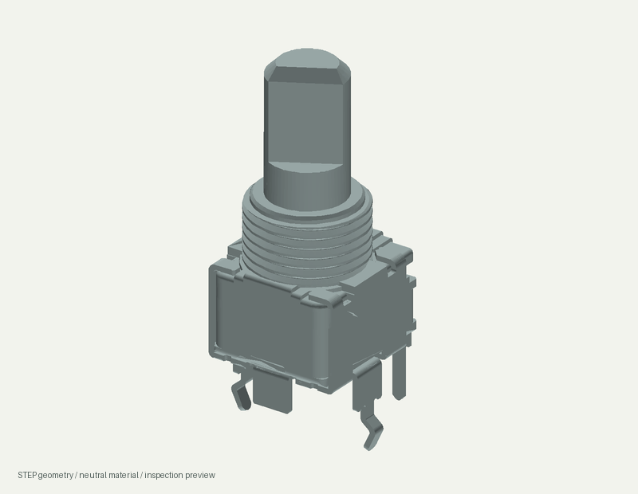

RK09L1140A5L / original manufacturer geometry
Drag to orbit; scroll to zoom. The grid is 10 mm. This is the recovered ALPS part model, not a verified populated-board assembly or an assumed footprint orientation.
Loading local model…
Original STEP · Component evidence · Project catalogue
Static CAD preview

Other parts have no exact retained 3D model unless explicitly recorded. Nominal mechanical envelope studies are separate and are not fit-qualified.